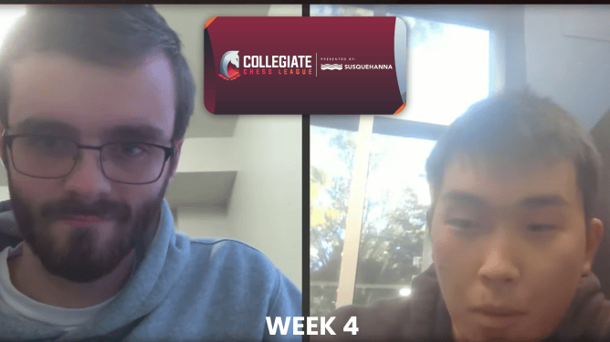

SRM extended their perfect score to 4/4 in week four of the 2024 Collegiate Chess League (CCL) Fall Season Collegiate Chess League (CCL) Fall Season. Saint Louis defeated Virginia and continues chasing SRM from a point behind.

Even with a 4/4 sweep by Athens's board one, IM Dimitris Alexis, for the second week in a row, a balanced performance from SRM outscored their opposition. Meanwhile, Saint Louis clinched their match with a round to spare.
The CCL continues with week five on Saturday, October 26, 2024, at 2 p.m. ET/20:00 CET/0:30 a.m. IST.
I'm organizing some chess games and would love for you to join us! It doesn’t matter if you’re a seasoned player or a beginner; it’s a great opportunity to have fun, improve your skills, and meet new people. If you're interested, let me know, and I can share the details about when and where we’ll be playing. Feel free to bring any friends who might want to join as well!